芒果千层蛋糕
方子两年前的夏天上传的，没想到那么受厨友们欢迎，平时太懒，很多留言我都没回复，谢谢热心的厨友们在评论里的各种解答，重新拍了一些步骤图，完善说明。
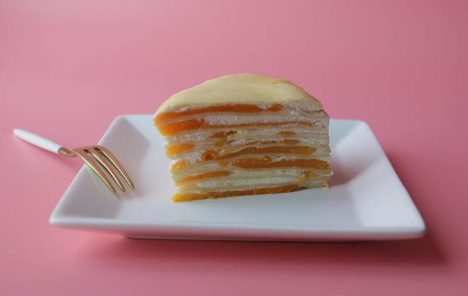方法/步骤
-
准备好材料，鸡蛋选个头大的，芒果选隔着皮都能闻到浓郁香气的品种，比如大台农芒、泰国青皮芒等。
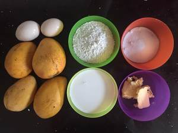 1 -
鸡蛋加糖搅拌，加入面粉拌匀，加入融化的黄油，再加入牛奶，混合均匀过筛，即可入锅煎皮。
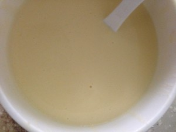 2 -
选择底部圆形较小的平底不粘锅，用汤勺舀约30ml面糊，晃动锅子摊匀，开小火煎10余秒，面皮可脱锅即可。只需煎单面。
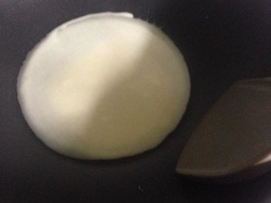 3 -
煎好一片面皮，把锅放在冷布上冷却，再倒入面糊摊匀，然后再开小火煎，关火出锅，冷却锅子，倒面糊继续煎，如此反复直到用完面糊。
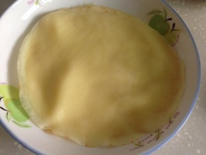 4 -
用一个六寸的圆形慕斯模压在面皮上，轻轻一旋即刻完美切割，完成每一片面皮的修整，可以让成品更美观。
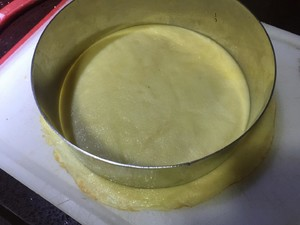 5 -
芒果切成薄片。
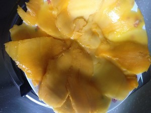 6 -
半片吉利丁剪成细片，用少量奶油泡软，放入温水锅中用筷子搅拌，隔水融化，吉利丁30多度便可溶解，温度过高会失活，所以要注意隔水的温度。
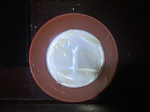 7 -
吉利丁液冷却后倒入奶油中拌匀，奶油加糖粉打至不流动。
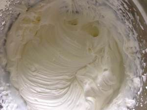 8 -
一层面皮一层水果一层奶油组装好，放入冰箱冷藏片刻，就可以切块享用啦！
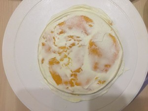 9 -
成品图。
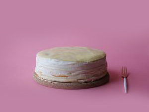 10 -
切块。
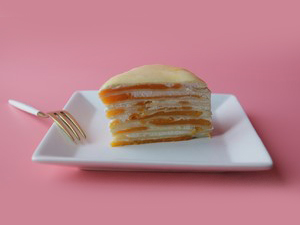 11
- 1
- 2
- 3
- 4
- 5
- 6
- 7
- 8
- 9
- 10
- 11
小贴士
1、加吉利丁液是为了夏天防止奶油过分融化，自家食用不加也可以，也可以在奶油里加入一点奶油奶酪一起打发，可以延缓融化。
2、面糊约可以煎12～15片，越薄越好。
3、芒果可以换成榴莲或水蜜桃等软质水果。
4、边角料不要浪费，切下来的面皮可以切碎垫在小饭盒底，上面盖芒果的边角料，再加一些奶油覆面，就是饭盒版的芒果千层啦。